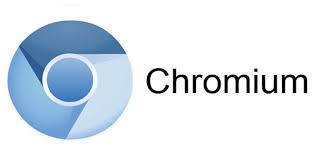

Dentro del abanico de distribuciones de GNU/Linux disponibles, una destacada elección para aquellos que deseen iniciar su viaje en el desarrollo de sistemas, y que también es apta para usuarios finales, es Ubuntu. Esta distribución es ampliamente reconocida y cuenta con un sólido respaldo por parte de la comunidad de código abierto.
Ubuntu utiliza el entorno gráfico GNOME, que se caracteriza por su gran intuición, lo que resulta especialmente beneficioso para aquellos que se inician en el mundo de los entornos Linux. Ofrece un acceso sencillo al sistema de archivos y destaca por su estabilidad, lo que brinda un entorno confiable para el desarrollo de sistemas y aplicaciones.
En cuanto a las herramientas recomendadas para dar los primeros pasos en el desarrollo de software en entornos GNU/Linux, estas son algunas de las opciones:
Terminal GNOME: Una herramienta fundamental que permite la interacción con el sistema a través de la línea de comandos.
IDE (Entorno de Desarrollo Integrado): Para la codificación, una elección popular es Visual Studio Code, que se destaca por su versatilidad y amplia comunidad de usuarios. Puedes encontrar más información sobre Visual Studio Code en este video.
Gestión de versiones: Para el control de versiones, GitHub es una plataforma ampliamente conocida y utilizada en la comunidad de desarrollo de software.
Virtualización: Para la creación y gestión de máquinas virtuales en Ubuntu, una opción sólida es VirtualBox, que ofrece una solución confiable y efectiva.
En resumen, Ubuntu con su entorno GNOME es una elección excelente para quienes desean adentrarse en el desarrollo de sistemas en el entorno GNU/Linux. Proporciona una experiencia intuitiva, estabilidad y acceso a herramientas esenciales que facilitan el proceso de desarrollo.
Para una computadora con 2 GB de RAM y una ROM de 300 GB, junto con un procesador de gama baja, para un estudiante creo que sería conveniente utilizar la distribución de Linux: “Lubuntu” porque incluso los ordenadores antiguos o menos potentes son compatibles con Lubuntu y porque como mínimo, se necesita un procesador único de 700 MHz, una memoria de trabajo de 512 MB y 5 GB de memoria.(Página oficial de Lubuntu: https://lubuntu.me/)
Y el entorno de escritorio a usar seria “LXQt”. LXQt es un entorno de escritorio Qt ligero, que no estorba, ni cuelga, ni ralentiza los sistemas operativos basados en GNU/Linux. Y que, además, se centra en ser un escritorio clásico con un aspecto moderno.
La superficie de usuario LXQt que usa Lubuntu es clara y minimalista. Con ella, ahorra recursos y garantiza que todas las aplicaciones funcionen rápidamente y sin retrasos incluso en ordenadores antiguos. Gracias a su estructura ordenada, los usuarios nuevos pueden hacerse a ella rápidamente. No obstante, este elegante sistema también prescinde de algunos efectos gráficos.
Los pocos requisitos de hardware de Lubuntu garantizan que se pueda sacar el máximo rendimiento a los ordenadores menos potentes y permite alargar la vida de los notebooks más lentos o de los PC más antiguos, que pueden seguir utilizándose para llevar a cabo tareas sencillas. (Página oficial de LXQt: https://lxqt-project.org/)
Aplicaciones
Aplicaciones que recomendaría para tareas básicas de un alumno sería:

Para navegar por internet Chromium (https://www.chromium.org/) por ser una App ligera y de muy buen rendimiento y muy parecido a chrome
También el paquete LibreOffice (https://es.libreoffice.org/) que incluye aplicaciones de procesamientos de textos, hojas de cálculo y presentaciones